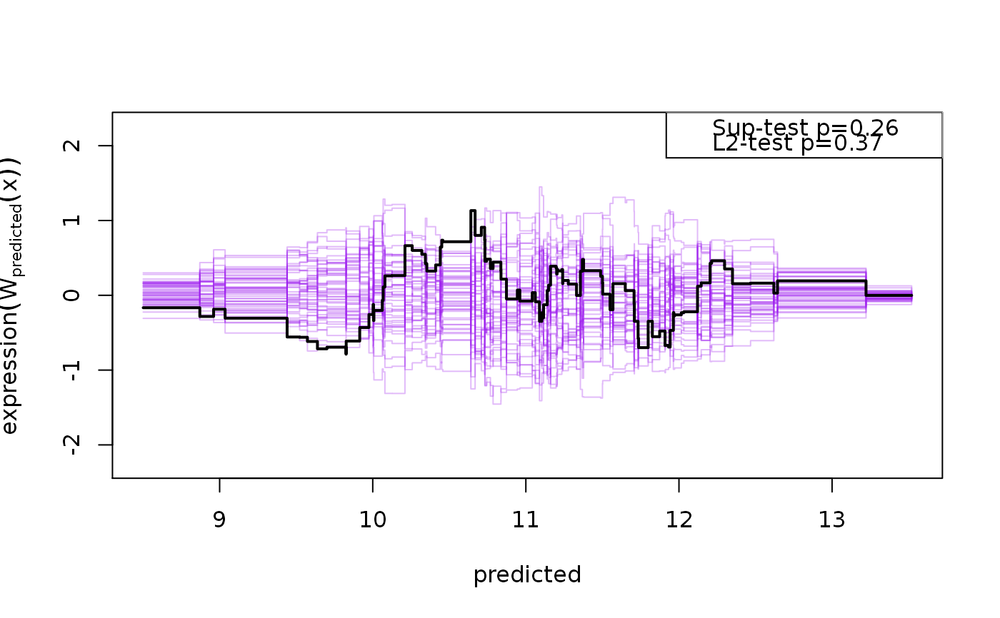
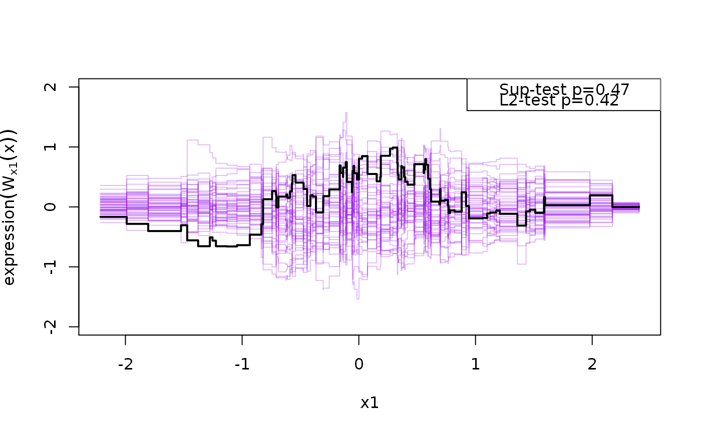
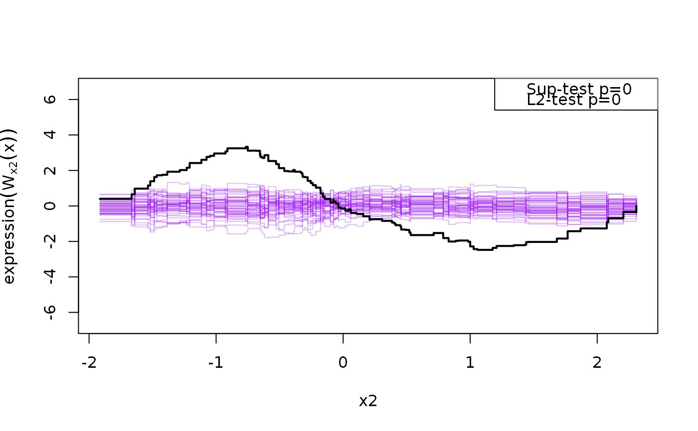

cumres.glm.RdGiven the generalized linear models model $$g(E(Y_i|X_{i1},...,X_{ik})) =
\sum_{i=1}^k \beta_jX_{ij}$$ the cumres-function calculates the the
observed cumulative sum of residual process, cumulating the residuals,
\(e_i\), by the jth covariate: $$W_j(t) = n^{-1/2}\sum_{i=1}^n
1_{\{X_{ij}<t\}}e_i$$ and Sup and L2 test
statistics are calculated via simulation from the asymptotic distribution of
the cumulative residual process under the null (Lin et al., 2002).
# S3 method for glm cumres( model, variable = c("predicted", colnames(model.matrix(model))), data = data.frame(model.matrix(model)), R = 1000, b = 0, plots = min(R, 50), ... )
| model | Model object ( |
|---|---|
| variable | List of variable to order the residuals after |
| data | data.frame used to fit model (complete cases) |
| R | Number of samples used in simulation |
| b | Moving average bandwidth (0 corresponds to infinity = standard cumulated residuals) |
| plots | Number of realizations to save for use in the plot-routine |
| ... | additional arguments |
Returns an object of class 'cumres'.
Currently linear (normal), logistic and poisson regression models with canonical links are supported.
D.Y. Lin and L.J. Wei and Z. Ying (2002) Model-Checking Techniques Based on Cumulative Residuals. Biometrics, Volume 58, pp 1-12.
John Q. Su and L.J. Wei (1991) A lack-of-fit test for the mean function in a generalized linear model. Journal. Amer. Statist. Assoc., Volume 86, Number 414, pp 420-426.
cox.aalen in the timereg-package for
similar GoF-methods for survival-data.
sim1 <- function(n=100, f=function(x1,x2) {10+x1+x2^2}, sd=1, seed=1) { if (!is.null(seed)) set.seed(seed) x1 <- rnorm(n); x2 <- rnorm(n) X <- cbind(1,x1,x2) y <- f(x1,x2) + rnorm(n,sd=sd) d <- data.frame(y,x1,x2) return(d) } d <- sim1(100); l <- lm(y ~ x1 + x2,d) system.time(g <- cumres(l, R=100, plots=50))#> user system elapsed #> 0.02 0.00 0.02g#> #> p-value(Sup) p-value(L2) #> predicted 0.26 0.37 #> x1 0.47 0.42 #> x2 0.00 0.00 #> #> Based on 100 realizations.plot(g)#> #> p-value(Sup) p-value(L2) #> predicted 0.35 0.35 #> #> Based on 100 realizations.#> #> p-value(Sup) p-value(L2) #> predicted 0.21 0.26 #> #> Based on 100 realizations.